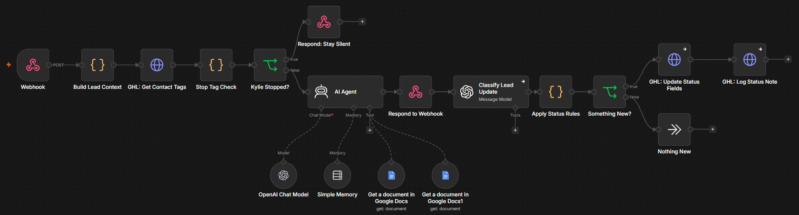
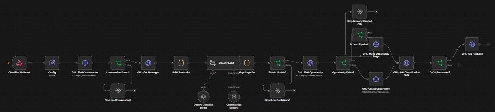

Complete Lending · 2025 to now
An SMS and voice lead agent that books calls and stays quiet when it should
Kylie answers leads by SMS and voice, books hot ones onto a loan officer's calendar, and follows up with the ones that went quiet, inside strict texting rules.

The problem
Leads reply at any hour and go cold if nobody answers. Texting them also comes with hard rules: calling hours, daily caps and opt-outs, where one mistake is costly.
What I built
- Kylie, the reply agent: an AI agent with conversation memory and playbook documents, which stays silent when a lead is tagged to stop
- A 41-node hot lead booker: two webhook entry points, an OpenAI chain that scores intent and reads a date and time out of free-text SMS, CRM stage moves, and booking on the assigned officer's calendar
- A lead classifier that places each lead on a pipeline stage with a fixed schema and skips low-confidence answers
- A follow-up scheduler that runs hourly and sends the next touch only when a stage's cadence says it is due
Key decisions
- Safe by default. Call-hour gates, daily and per-run caps, and dry-run on by default; customer-facing automation ships switched off.
- Memory in Postgres, replacing in-memory buffers that were lost on restart.
- A race fixed. Two systems wrote the same CRM opportunity; stage guards and a deferred-execution step stopped them overwriting each other.
- Workflows as code. 200+ workflows are generated from JavaScript build scripts with their own unit tests and validators, so a change is a reviewed diff.
Results
- 200+workflows in production
- 41nodes in the booker
- Dry-runon by default for every send

